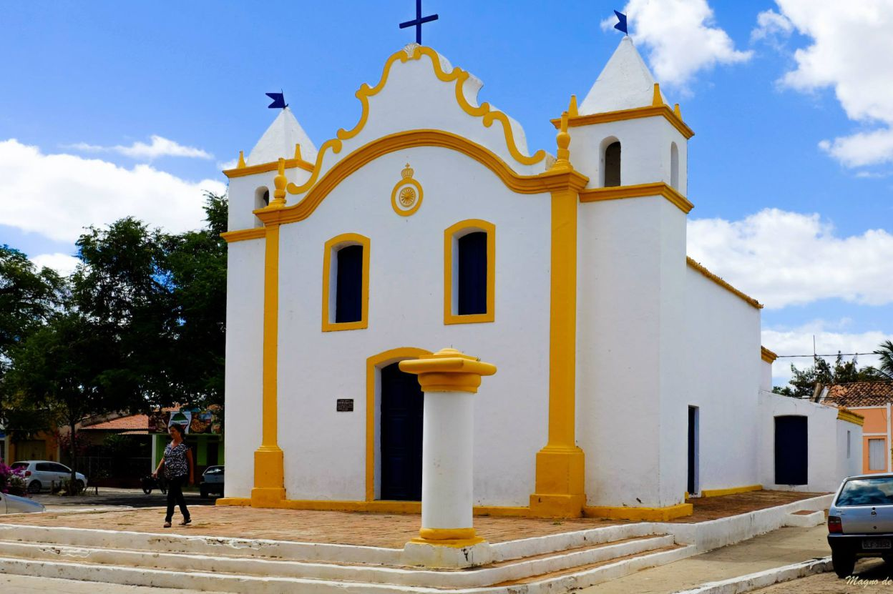

FLORESTA, PE
TERRA DOS TAMARINDOS

O casario de Floresta é um conjunto arquitetônico que conforma o sítio histórico de Floresta. Localiza-se no centro da cidade e destaca-se pelo valor histórico, pelo grau de conservação dos imóveis, pela beleza e harmonia das fachadas, e pela mistura de estilos, predominando o estilo eclético, intercalados ao neoclássico e o barroco.
O município de Floresta-PE, é o segundo maior município do estado, com uma área de 3.644,168 km². Com uma Distância de 438 Km da cidade de Recife – capital do estado e está a 316 metros de altitude. Localizada na microrregião de itaparica tendo como vizinhos os municipios de Belém do São Francisco, Ibimirim, Petrolândia, Carnaubeira da Penha, Betânia e Itacuruba.
Inaugurada em 1969. Está localizada na praça Antonio Ferraz. Sua construção representa o espírito moderno da Igreja Católica, sendo a maior igreja da cidade. É importante registrar também que no seu interior,a existência do túmulo de Dom Francisco Xavier Nieorff, 3º Bispo da diocese e construtor deste templo.
O artesanato do município viabiliza o desenvolvimento de projetos que possam garantir o crescimento do turismo local, tendo em vista sua beleza e diversificação, constatados principalmente na confecção de artefatos de couro. As roupas de vaqueiro, como o gibão, chapéu, guarda-peito, perneira, entre outros, representam uma tradição secular, em um rico acervo de material artesanal.
Localizada a 20 km da sede do município. Justifica-se como atrativo turístico pela sua riqueza arqueológica. Várias inscrições rupestres em blocos rochosos evidenciam a presença, e permanência dos índios Tapuias.
Os visitantes ainda podem apreciar no local: o rio Pajeú, com um lendário poço que nunca secou, a beleza exótica de vários afloramentos graníticos formando esculturas naturais e também espécies arbóreas da caatinga.
Esta singela igreja, impressiona pelo fato de estar localizada no alto de uma colina, de onde se pode descortinar uma vista panorâmica da cidade e contemplar a beleza de um por do sol no sertão. De forte conteúdo simbólico, essa igreja foi durante muito tempo, palco de seresta e encontros da juventude.